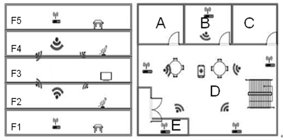
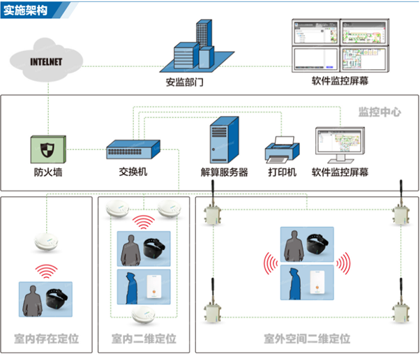

位置服务
系统概述
区域定位系统是提供大型场馆、文娱场所、医疗机构、监管设施的室内外一体化的位置服务系统。用户的移动设备与预设在监测环境中的智能硬件之间通信生成独一无二的区域性“签名”，系统通过将这种“签名”对应到预设的区域ID，来实现的复杂广域环境下的精确定位。与传统的定位系统GSM/GPS相比，基于Beacon技术的鸿远区域定位系统具有精度高、能耗低、性价比高、作用环境广等巨大优势。

-

精度高
传统的定位服务，如GSM基站定位，市区室外最高可精确到50米（收到6个以上基站信号），偏僻地区的精度可能会降至1公里；再者，如GPS定位，民用最高可精确到100米。根据用户的需求，鸿远区域定位系统可精确到3-10米。
-
能耗低
400mAh锂电池最多可支持一般移动设备GSM定位服务两星期或者GPS定位服务一星期的续航时间。基于Beacon的鸿远区域定位技术的可达到一年的续航时间，从而满足各种客户的广泛需求。
-
性价比高
硬件系统采用的是极其简单的信标以及可穿戴设备。系统根据客户的需求预置定位支撑性硬件，并最大化利用已有的设备设置，如Wi-Fi、基站、输电线。硬件设备安装简单，无需破墙。对安装人员的资质无特殊要求，普通人群即可满足。
-
使用条件广泛
与传统的定位服务相比，区域定位系统可提供室外室内的混合定位服务，将用户的位置对应到预设的区域ID，为用户或监管机构提供最直观的位置标签与信息。
应用场景
-
大型场馆
构建大型场馆的室内定位系统及移动位置服务平台，对于提升场馆的服务质量、营业收入、为场馆营销提供辅助决策等方面具有重要意义。支持用户位置的跟踪和记录功能；自定义范围和条件来触发推送功能；场馆室内地图展示功能；覆盖区域的实时定位功能；定位精度3-5米；商业及公共设施查询功能；支持语义、关键字、英文等多种查询方式；位置共享社交功能，支持多个用户之间的位置共享。
-
文娱场所
提供文娱场所中楼宇、食堂、寝室、操场等功能性区域的人员定位。对于容易发生的危险情况，比如歹徒进出，学生偷走出校门，校园内有假山湖水等的危险区域，也提供特别定位并进行内部报警。支持教师学生等的考勤功能、标签管理，同时能融合学校系统，能够进行更好的智慧化管理。
-
医疗机构
采用二维条码腕带作为身份识别载体，药物外贴条码作为识别和核对载体。通过平板手持终端，实现护士的移动护理，主要涵盖条码核对、医嘱执行、床旁体征采集等功能。实现护理电子病历系统，脱离手工单。实时查找到所需要的医疗设备可以对重要病人追踪，并提供历史移动记录对医护人员是否按照要求进行查房护理进行监控。对婴儿实现防盗，病人可以随时随地呼叫。
-
全封闭设施
通过在监狱、看守所等劳改场地内布设有限数量的Beacon，实时精确地定位嫌犯、在押人员、干警身上穿戴设备的位置，零延时地将两者的位置信息准确地将反映到监控室，有效进行警情预警、人员追踪、轨迹分析、聚众行为预判等。
实施架构

区域定位系统的实施架构，自下而上由三部分组成：监控环境、监控中心、安监部门。

评论抢沙发